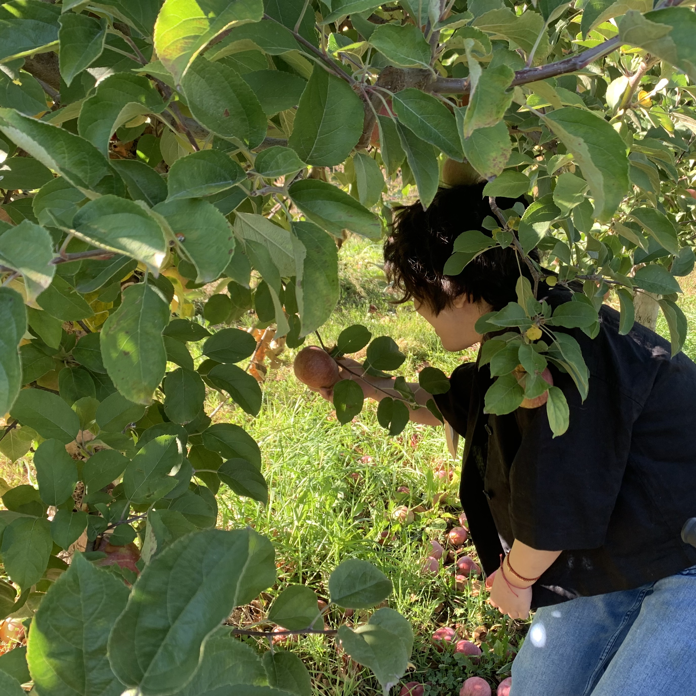

Shirley Zhong
Artista e curatore (scrittura e interpretazione)
Shirley Zhong è una scrittrice che si occupa di sceneggiature, libri, giornali, performance e oggetti trovati. Basandosi sul suo impegno nei confronti della comunità e sulla sua condizione di disabile, il suo lavoro esamina l'interconnessione tra materialità e finzione attraverso le relazioni. È interessata al modo in cui la narrazione crea un legame tra lo scrittore, il linguaggio e il pubblico, facilitando la creazione di spazi per nuovi percorsi e amicizie.